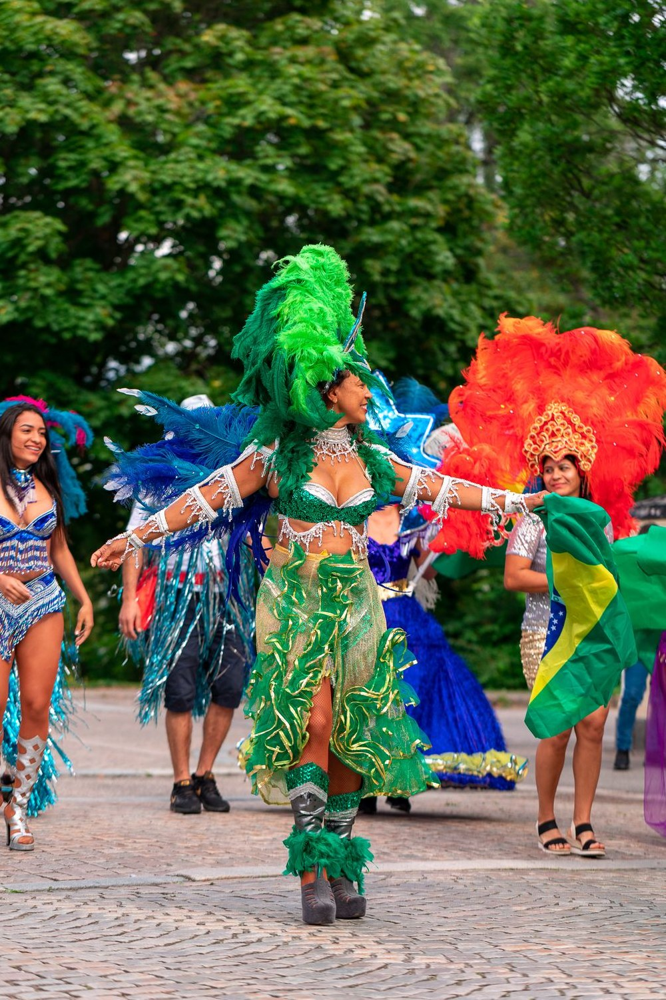

File 01 · Carnaval 2026 · Estrela da Serra · Position: destaque de chão · Status: danced, position renewed
The avenue, in seventy minutes
The brief. After two seasons as a passista, the school's diretoria de harmonia invited her up: destaque de chão for the 2026 parade, enredo “Rios que Cantam” — the rivers that sing. A destaque de chão dances on the ground, ahead of a float, in the judges' full view, for the length of her sector. There is nowhere to hide and no one to hide behind.
The decisions. Ground, not float: the float destaques wear the Class A fantasias, but the river enredo put its biggest costeiros on the water float, and the school's choreographer wanted the river's “current” danced at ground level. So: Class B costume — half costeiro, headdress, full stonework — 180 build hours and 5 fittings in the school atelier, built by the atelier's head seamstress and feather team, whose work those hours are. Materials, as the atelier states them: farmed rooster and pheasant feathers, dyed; no wild-bird feathers; stonework glass, not crystal — a costume is built to be danced in, not insured.
The rehearsal count. Thirty-six sessions, the school's standard, the last four in full costume after delivery — nine days before the technical rehearsal, as the planner on the home page counts it.
Avenue running order — as printed for the school
The outcome. The school placed 4th in Série Ouro — the school's result, earned by three thousand components, and printed here as the school's. Her own record from the night is smaller and she keeps it that way: position danced in full, costume home intact, and the diretoria's invitation to hold the position again for 2027.
“You book a destaque by the clock, not by the sparkle. Her costume was finished nine days before the technical rehearsal, and she had danced her thirty metres of avenue thirty-six times in rehearsal before she danced them once for the judges. That is why the position is hers again.”